#minecraft:stone_crafting_materials
物品标签 · 18 个已收录成员
标签成员 (18)
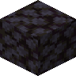
黑石圆石eternalnether:cobbled_blackstone
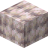
象牙白石灰华atmospheric:ivory_travertine
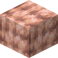
桃红石灰华atmospheric:peach_travertine
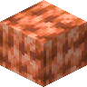
柿子橙石灰华atmospheric:persimmon_travertine藏红石灰华
atmospheric:saffron_travertine
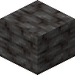
暗板岩darkerdepths:darkslate
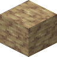
旱地岩darkerdepths:aridrock
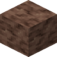
暮色岩darkerdepths:duskrock
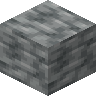
阴森石darkerdepths:grimestone
 阴沉石
阴沉石eternal_starlight:grimstone
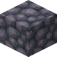
阴沉石圆石eternal_starlight:cobbled_grimstone
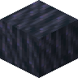
虚空石eternal_starlight:voidstone
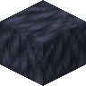
虚空石圆石eternal_starlight:cobbled_voidstone
 洞石碎石
洞石碎石natures_spirit:cobbled_travertine
 黑硅岩
黑硅岩natures_spirit:chert
 圆石
圆石minecraft:cobblestone
 黑石
黑石minecraft:blackstone
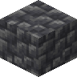
深板岩圆石minecraft:cobbled_deepslate
使用该标签的配方
有序合成Minecraft

原始 JSON
{
"type": "minecraft:crafting_shaped",
"category": "misc",
"key": {
"#": {
"tag": "minecraft:stone_crafting_materials"
},
"B": {
"item": "minecraft:blaze_rod"
}
},
"pattern": [
" B ",
"###"
],
"result": {
"count": 1,
"id": "minecraft:brewing_stand"
}
}